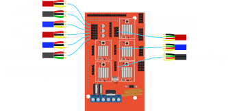

DaphnieMaton
Les Outils
- 1.
2 * clé à molette de 10 pouces
- 2.
Tournevis PH2
- 3.
Cable usb type B
- 4.
Cable jack de puissance (12V 5A)
Construction des 'H's
- 1.
Prendre les pieds A et D
- 2.
Visser avec les boulons classiques un support marqué S sur le bas des pieds de façon à ce que les équerres pointent vers le haut
- 3.
Visser avec les boulons classiques un support marqué P sur le haut des pieds de façon à ce que les équerres pointent vers le bas
- 4.
Prendre les pieds B et C
- 5.
Visser avec les boulons classiques un support marqué S sur le bas des pieds de façon à ce que les équerres pointent vers le haut
- 6.
Visser avec les boulons classiques un support marqué P sur le haut des pieds de façon à ce que les équerres pointent vers le haut
Axe X
- 1.
Prendre le rail avec le moteur et sans l'Arduino
- 2.
Le visser avec les boulons classiques sur le pieds C et D sous le moteur
- 3.
Visser un support à équerre noir entre C et D
- 4.
Faire de même avec le rail comportant l'Arduino sur les pieds A et B
Axe Y et courroies
- 1.
Dévisser les moteurs et leurs supports (sur les deux rails déjà placés)
- 2.
Glisser le troisième rail sur les deux autres
- 3.
Remmettre les supports de moteurs et les moteurs
- 4.
Passer les couroies dans les poulies et autours des moteurs puis les mettre dans les 'pinces' sur le rail du milieu
Rallonges pour interrupteurs
Pour garder les câbles en place il est conseillé d’enrouler les câbles autour des supports en bois
| Position de l'Interrupteur | Couleurs | Taille |
|---|
Rallonges pour moteurs
Pour garder les câbles en place il est conseillé d’enrouler les câbles autour des supports en bois
| Position du moteur | Couleurs |
|---|
Connexion sur l'Arduino
Mise en route
- 1.
Connecter, à l'aide du câble usb B, le système à l'ordinateur
- 2.
Démarrer l'application dédié et suivre les instructions données
- 3.
Brancher l'adaptateur jack de puissance et lancer le programme d'acquisition (ne pas oublier le bouton de démarrage)
Maintenance
- 1.
Vérifier que les câbles soient libres de leurs mouvements
- 2.
Si les rails ou le système ont été salies, les nettoyer à l'aide d'un chiffon légèrement humidifié
- 3.
Vérifier l'état des élastiques et les changer si besoin
- 4.
Si vous soupçonner le système d'être défaillant, tester le en utilisant le mode 'Libre' du logiciel associé
Rangement
- 1.
Retirer les courroies, les interrupteurs et les moteurs ainsi que leurs socles sur les pieds A et D
- 2.
Faite glisser le rail d'axe Y vers l'Arduino et le retirer après avoir débrancher le moteur et les interrupteurs
- 3.
Revisser les moteurs et les interrupteurs en place afin de ne pas les perdre
- 4.
Devisser et mettre de côté les renforts à équerres noirs
- 5.
Dévisser les rails d'axe X, débrancher les interrupteurs ainsi que les moteurs et metter les de coté
- 6.
Si le système prends encore trop de place, dévisser les renforts des H
Référence des pièces
| Pièce | Quantité | Lien |
|---|
| Moteur | 3 | Amazon |
| Interrupteur | 6 | Amazon |
| Rail | 3 | Amazon |
| Poulie moteur | 3 | Amazon |
| Poulie opposée | 3 | Amazon |
| Tasseau bois | 7m | Leroy Merlin |
| Tube carré | 2.5*2.5*200 cm | Amazon |
| bouchons pour tube | 4 | Amazon |
| Rallonge Moteur | X | Amazon |
| Rallonge Interrupteur | X | Amazon |
| Grosse équerre | 6 | Brico |
| équerre noire | 20 | Amazon |
| équerre AE48 | 1 | Amazon |
| équerre sur renforts | 6 | Amazon |
| Gros boulons | 85 | Leroy Merlin |
| écrous gros boulons | 73 | Leroy Merlin |
| Boulons moyen | 3 | / |
| Petit boulons | 12 | / |
| Boulons pour Arduino | 3 | / |
| Vis pour renforts | 8 | / |
| élastiques | 6 | Amazon |
| Plaque en acier | 1 | Leroy Merlin |
| courroies | 10m | Amazon |